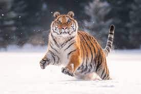

Tijgerfoto

Absoluut!!!
Tijgerpagina
Foto's van tijgers
Tijgers zijn prachtige dieren. Hieronder staan verschillende tijgers Tijgers
zijn prachtige dieren. Hieronder staan verschillende tijgers Tijgers zijn prachtige
dieren. Hieronder staan verschillende tijgers Tijgers zijn prachtige dieren.
Hieronder staan verschillende tijgers Tijgers zijn prachtige dieren. Hieronder staan
verschillende tijgers Tijgers zijn prachtige dieren. Hieronder staan verschillende
tijgers Tijgers zijn prachtige dieren. Hieronder staan verschillende
tijgers
Tijgerpagina
Foto's van tijgers
Tijgers zijn prachtige dieren. Hieronder staan verschillende tijgers Tijgers
zijn prachtige dieren. Hieronder staan verschillende tijgers Tijgers zijn prachtige
dieren. Hieronder staan verschillende tijgers Tijgers zijn prachtige dieren.
Hieronder staan verschillende tijgers Tijgers zijn prachtige dieren. Hieronder staan
verschillende tijgers Tijgers zijn prachtige dieren. Hieronder staan verschillende
tijgers Tijgers zijn prachtige dieren. Hieronder staan verschillende
tijgers
Links naar andere tijgerpagina's
Tijgerpagina 1
Tijgerpagina 2